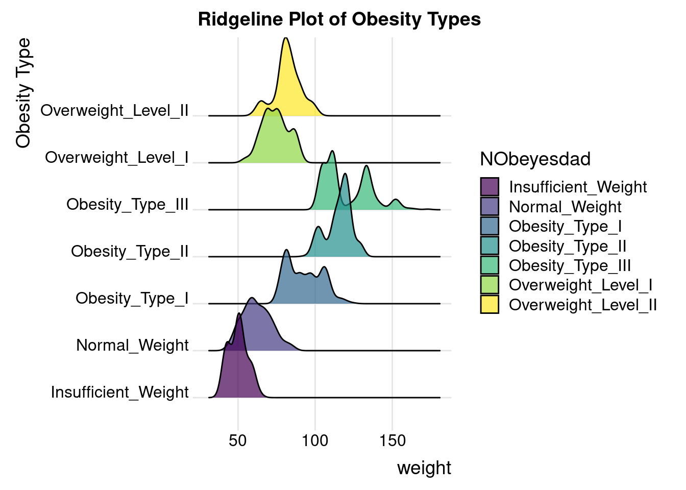
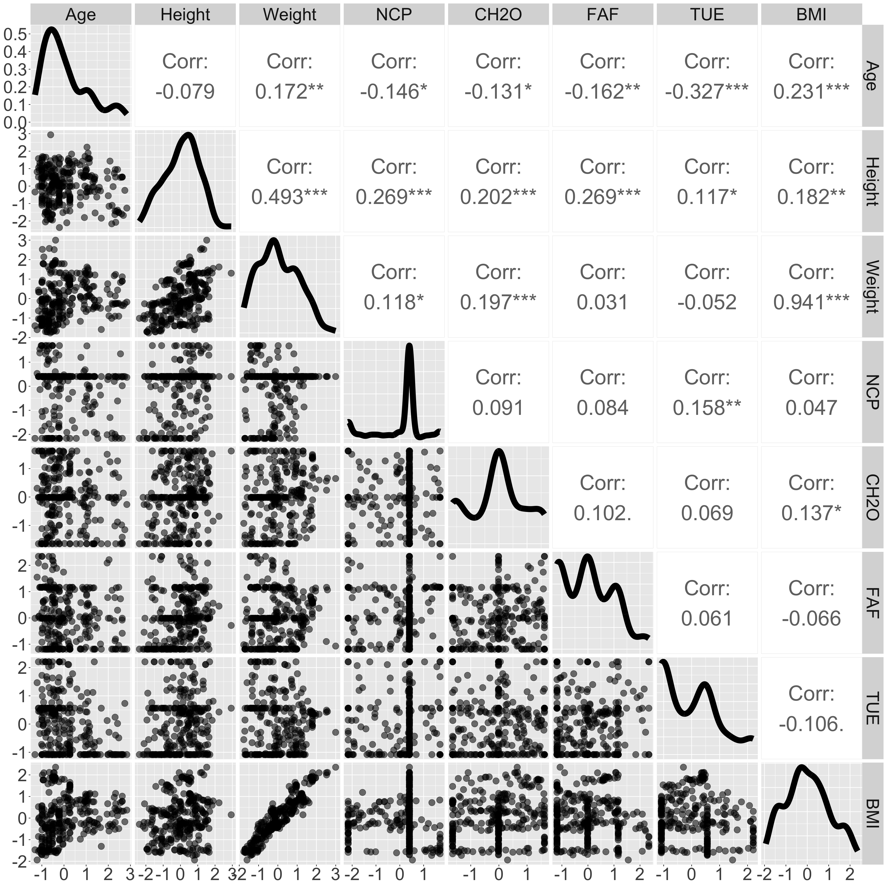

In the next few subsections, we dive into the details of how we drew these conclusions.
3.2 Data pre-processing
To conduct deeper analysis on our data, we added the following columns to our dataset:
BMI: the Body Mass Index of each person, a continuous variable calculated using the World Health Organization guideline: \(BMI = \frac{Weight}{Height^2}\).
IsOverweight: a binary categorical value whose value is 1 if the BMI of the person is more than 25, 0 otherwise.
These columns serve as alternate metrics of the obesity of an individual, a continuous variable and a binary categorical variable, to complement NObeyesdad, the obesity category level which is a ordinal categorical variable.
These new columns can be found and used directly in the dataset scripts/xinyi-zhao_files/CleanObesityDataSet.csv.
In order to improve the visualization of certain plots, we also made local modifications to the data types of some columns, as follows:
Rounded the variables: Frequency of consumption of vegetables (FCVC), Number of main meals (NCP), Physical activity frequency (FAF), Time using technology devices (TUE)
3.3 Analysis of Height, Weight and BMI variables
Since the dataset contains artificially generated data, we first needed to verify that the dataset matches our expectations, notably by visualizing the distribution of these three continuous variables.
Preliminary verifications of the number of rows, columns and missing values of our dataset show that there does not seem to be any problems with the structure of our dataset.
Code
cat("Number of rows in dataset: ", nrow(data), "\nNumber of columns in dataset: ", ncol(data),"\nNumber of missing values in dataset: ", sum(is.na(data)))
Number of rows in dataset: 2111
Number of columns in dataset: 20
Number of missing values in dataset: 0
Additionally, the data seems to align with our expectations, visualizing the Height, Weight and BMI variables shows that there are no biases with respect to the people surveyed.
Code
# Histograms of Height, Weight and BMIplot1 <-ggplot(data = data, aes(x = Height)) +geom_histogram(binwidth =0.02)plot2 <-ggplot(data = data, aes(x = Weight)) +geom_histogram(binwidth =2)plot3 <-ggplot(data = data, aes(x = BMI)) +geom_histogram(binwidth =1)grid.arrange(plot1, plot2, plot3, ncol =3,top =textGrob("Histograms of the continuous variables Height, Weight and BMI",gp=gpar(fontsize=16)))
Code
shapiro.test(data$Height)
Shapiro-Wilk normality test
data: data$Height
W = 0.99323, p-value = 2.772e-08
Code
shapiro.test(data$Weight)
Shapiro-Wilk normality test
data: data$Weight
W = 0.9765, p-value < 2.2e-16
Code
shapiro.test(data$BMI)
Shapiro-Wilk normality test
data: data$BMI
W = 0.97475, p-value < 2.2e-16
The weight of the individuals does not appear to be normally distribution as it has a right skew. Body weight is found to have a right skew according to research.
The BMI of individuals
Lastly, we plotted a boxplot to better understand the other statistics (e.g. median, outliers) of the variable BMI.
Code
# Boxplot to visualize the BMI across all individuals ggplot(data, aes(x=BMI)) +geom_boxplot(fill ="lightblue", color ="black") +coord_cartesian(ylim =c(-2, 2)) +labs(title ="Boxplot of BMI across all individuals")
Code
fivenum(data$BMI)
[1] 12.99868 24.32580 28.71909 36.01650 50.81175
Code
ggplot(data, aes(x = Weight, y = NObeyesdad, fill = NObeyesdad)) +stat_density_ridges(alpha =0.7) +scale_fill_viridis_d() +labs(title ="Ridgeline Plot of Obesity Types", x ="weight", y ="Obesity Type") +theme_ridges()
Picking joint bandwidth of 2.62

3.4 Preliminary visualizations
Code
set.seed(123456)data <- data %>%mutate_if(is.numeric, scale)data_num <- data[c("Age", "Height", "Weight", "NCP", "CH2O", "FAF", "TUE","BMI")]# Convert all columns to numericdata_num <-sapply(data_num, as.numeric)# Sample 1000 points for clearer visualizationdata_sampled <-sample_n(as.data.frame(data_num), 300)ggpairs(as.data.frame(data_sampled), aes(alpha =0.4, size =0.02), upper =list(continuous =wrap("cor", size =12))) +theme(text =element_text(size =35))

3.5 Understanding the correlation between biological factors and obesity


{kind=link}
{kind=link}